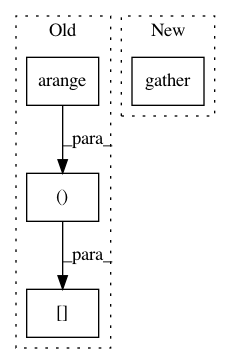

c473c620d141968c2ed3a62f60bf466d5790393e,reagent/models/seq2slate.py,Seq2SlateTransformerModel,encoder_output_to_scores,#Seq2SlateTransformerModel#Any#Any#Any#Any#,658
Before Change
// order encoder_output by tgt_out_idx
// slate_encoder_output shape: batch_size, tgt_seq_len, dim_model
slate_encoder_output = encoder_output[
torch.arange(batch_size, device=device).repeat_interleave(tgt_seq_len),
(tgt_out_idx - 2).flatten(),
].reshape(batch_size, tgt_seq_len, -1)
// encoder_scores shape: batch_size, tgt_seq_len
After Change
// order encoder_output by tgt_out_idx
// slate_encoder_output shape: batch_size, tgt_seq_len, dim_model
slate_encoder_output = gather(encoder_output, tgt_out_idx - 2)
// encoder_scores shape: batch_size, tgt_seq_len
return self.encoder_scorer(slate_encoder_output).squeeze()
def encode(self, state, src_seq, src_mask):
In pattern: SUPERPATTERN
Frequency: 3
Non-data size: 4
Instances
Project Name: facebookresearch/Horizon
Commit Name: c473c620d141968c2ed3a62f60bf466d5790393e
Time: 2020-11-06
Author: czxttkl@fb.com
File Name: reagent/models/seq2slate.py
Class Name: Seq2SlateTransformerModel
Method Name: encoder_output_to_scores
Project Name: dpressel/mead-baseline
Commit Name: 3218a3987ef9f83d1ad5efd6f96d6f6c741c3cfa
Time: 2019-09-27
Author: dpressel@gmail.com
File Name: python/eight_mile/pytorch/layers.py
Class Name:
Method Name: viterbi
Project Name: dpressel/mead-baseline
Commit Name: 8516950fa0683319a31f91e80148ddd62ff56a49
Time: 2019-01-10
Author: blester125@users.noreply.github.com
File Name: python/baseline/pytorch/crf.py
Class Name:
Method Name: viterbi